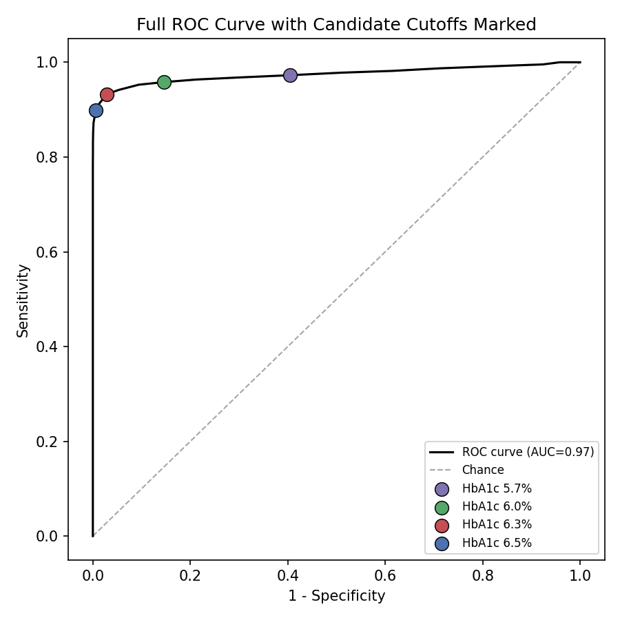
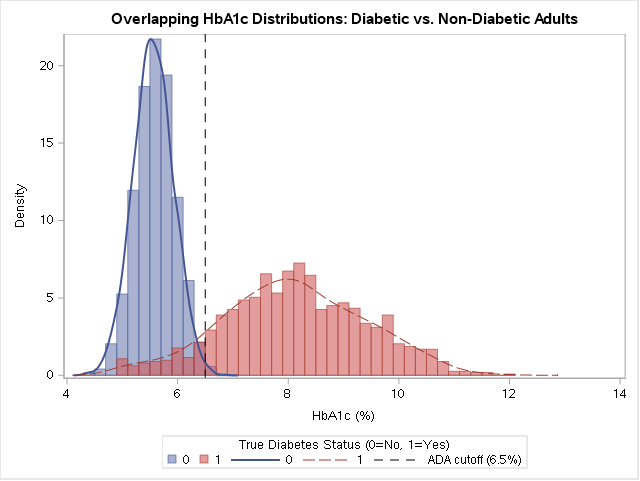

Immunization Information System Data Quality Audit
Using simulated adult data calibrated to broad patterns seen in national diabetes surveillance, this work evaluates HbA1c cutoffs from 5.7% to 6.5% and compares their diagnostic performance. The goal was not to redefine a national clinical standard, but to demonstrate a rigorous analytic workflow for evaluating screening and diagnostic thresholds.
| HbA1c Cutoff | Sensitivity | Specificity | PPV | Screen-Positive / 1,000 |
|---|---|---|---|---|
| 5.7% | 97.3% | 59.6% | 35.0% | 508 |
| 6.0% | 95.8% | 85.4% | 59.6% | 294 |
| 6.3% | 93.3% | 97.1% | 88.0% | 194 |
| 6.5% (current) | 89.9% | 99.3% | 96.9% | 170 |
Figure 1: ROC curve showing the tradeoff between sensitivity and specificity across candidate cutoffs.

Figure 2: HbA1c distribution in diabetic and non-diabetic adults.

At the 6.5% threshold, sensitivity and specificity were broadly similar across the groups examined in the simulation. That finding is helpful for illustrating the method, but it should not be treated as a real-world conclusion without more robust data and validation. In practice, this is exactly the type of subgroup analysis that should be repeated before adopting or defending any screening threshold.
The memo does not argue for changing the current 6.5% cutoff; rather, it shows the analytic framework that should be used whenever a program reviews a diagnostic or screening threshold. The workflow includes comparing multiple cutoffs, inspecting the ROC curve, checking subgroup performance, and making the equity implications explicit.
This summary is based on simulated data and is intended as a demonstration of method rather than a real epidemiologic estimate. A production analysis would use real surveillance or health-system data, validated diagnosis labels, and appropriate covariates.
Full code, analysis, and documentation available on GitHub here.
Immunization Information System Data Quality Audit

Risk-Adjusted Portfolio Optimization and Stability Analysis

Cardiovascular Risk Profiles Among Female Patients